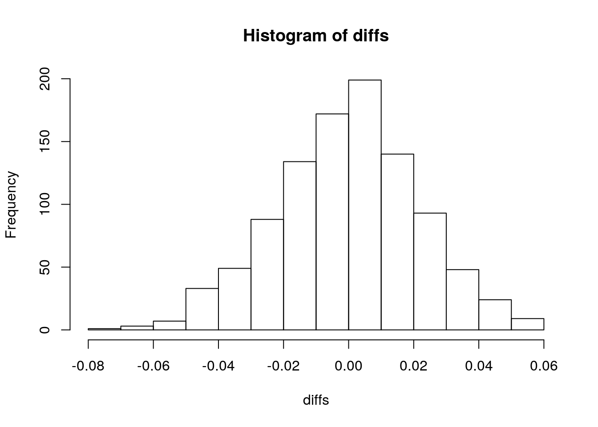
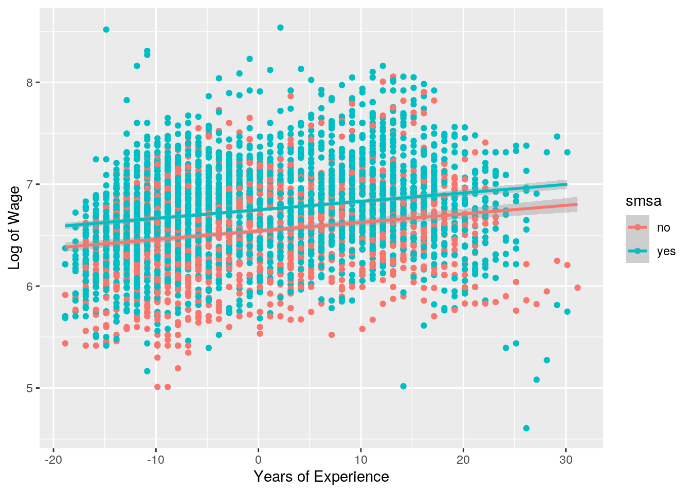
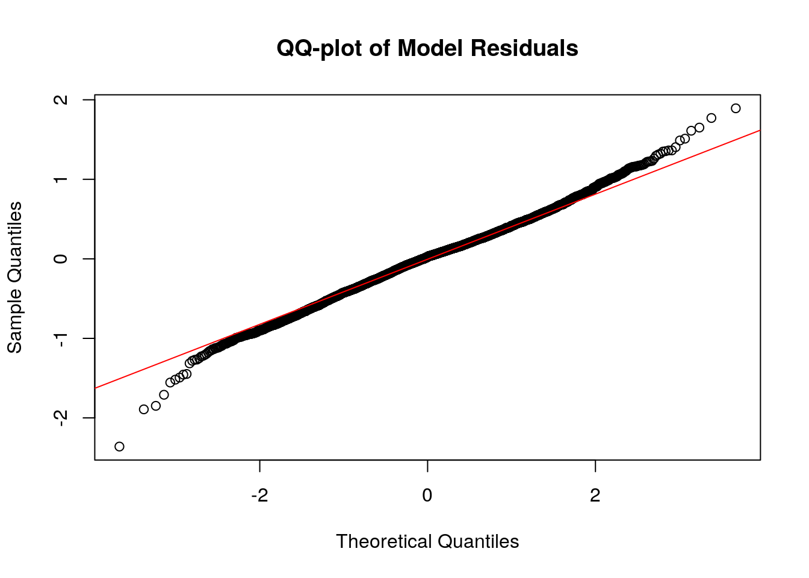
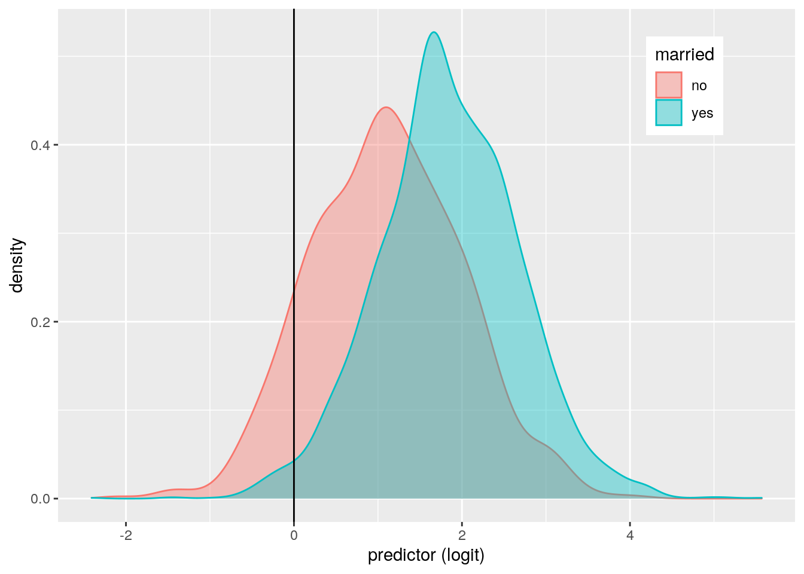
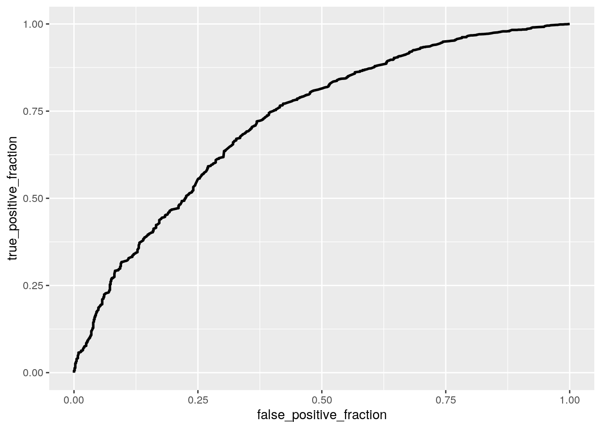

The dataset is sourced from a study on income dynamics (https://www.jstor.org/stable/2096586?seq=1) and reports individual log wages (lwage) from 1976 to 1982. For each individual, years of full-time work (exp), weeks worked (wks), and years of education (ed). Binary variables include marriage status (married), sex (sex), residence in the south (south), and more (https://vincentarelbundock.github.io/Rdatasets/doc/Ecdat/Wages.html). In total, there are 4,165 observations of 12 variables.
library(tidyverse)
wage <- read_csv("https://docs.google.com/spreadsheets/d/e/2PACX-1vSMFuWbZe2hP3z20FIfGGQzNxZMoeUCavdNg29c-07Yq1rp47n4Z3XRyaeKNCuO3HwiH1q0uzfrNLhG/pub?output=csv")A total of 4 tests were performed, and the probability of making at least one type I error is 18.5%. The significance level was adjusted accordingly to 0.0125.
A MANOVA was performed to determine if log wage and/or years of education differed by sex. Seeing as the p-value is less than 0.0125, univariate ANOVAs were performed to determine which responses differed by sex. It was found that only log wage differed by sex (p < 2.2e-16) and the difference in years of education is insignficant (p = 937). Finally, a post-hoc t-test was performed, but since the variable sex has only 2 groups, it only serves as a confirmation of the previous conclusions.
man <- manova(cbind(lwage, ed) ~ sex, data = wage)
summary(man)## Df Pillai approx F num Df den Df Pr(>F)
## sex 1 0.12467 296.39 2 4162 < 2.2e-16 ***
## Residuals 4163
## ---
## Signif. codes: 0 '***' 0.001 '**' 0.01 '*' 0.05 '.' 0.1 ' ' 1summary.aov(man)## Response lwage :
## Df Sum Sq Mean Sq F value Pr(>F)
## sex 1 93.69 93.691 491.72 < 2.2e-16 ***
## Residuals 4163 793.21 0.191
## ---
## Signif. codes: 0 '***' 0.001 '**' 0.01 '*' 0.05 '.' 0.1 ' ' 1
##
## Response ed :
## Df Sum Sq Mean Sq F value Pr(>F)
## sex 1 0 0.0483 0.0062 0.9372
## Residuals 4163 32366 7.7748pairwise.t.test(wage$lwage, wage$sex, p.adj = "none")##
## Pairwise comparisons using t tests with pooled SD
##
## data: wage$lwage and wage$sex
##
## female
## male <2e-16
##
## P value adjustment method: none1 - 0.95^4## [1] 0.18549380.05/4## [1] 0.0125A mean difference randomization test was performed to determine whether the mean difference in log wage between men and women is significant. The null hypothesis states that there is no mean difference in log wage between men and women, and the alternative hypothesis states that there is a mean difference in log wage. The null distribution of differences is given, and it was found that 0% of these observations are greater than the actual mean difference of 0.412. Therefore, the p-value is 0 and it can be concluded that there is a significant difference in the mean log wage between men and women.
wage %>% group_by(sex) %>% summarize(mean_wage = mean(lwage))## # A tibble: 2 x 2
## sex mean_wage
## <chr> <dbl>
## 1 female 6.26
## 2 male 6.73obs_diff <- 6.729774 - 6.255308
set.seed(348)
diffs <- vector()
for (i in 1:1000) {
temp <- wage %>% mutate(wage = sample(wage$lwage))
diffs[i] <- temp %>% summarize(mean(wage[sex ==
"male"]) - mean(wage[sex == "female"])) %>%
pull
}
hist(diffs)
abline(v = obs_diff, col = "red", lty = 2)
mean(diffs > obs_diff)## [1] 0A linear regression was performed to predict log wage from years of education and years of full-time work experience. The intercept of 6.677 is the predicted log wage for individuals with average work experience and not living in a standard metropolitan statistical area (SMSA). The coefficient smsayes indicates that individuals living in a SMSA with average work experience have a predicted log wage that is 2.071e-01 greater than individuals not living in a SMSA. The coefficient exp_c indicates that the slope for work experience on log wage for individuals not living in a SMSA is 8.380e-03. Finally, the smsayes:exp_c coefficient indicates the difference in slopes is -6.242e-05 (not significant).
The R-squared is 0.0893, indicating that only 8.93% of the variation in the outcome is explained by the model. Graphically, the assumption of linearity is not met, as there is a large spread in the data. However, there does appear to be a slight positive correlation between years of experience and log wage. The QQ-plot of model residuals confirms that the residuals are normally distributed. The Breuch-Pagan test was performed, leading to the rejection of the null hypothesis of homoskedasticity. The regression was redone using heteroskedasticity robust standard errors, but each of the significant coefficients discussed above remained significant.
library(lmtest)
library(sandwich)
wage$lwage_c <- wage$lwage - mean(wage$lwage)
wage$exp_c <- wage$exp - mean(wage$exp)
wage$ed_c <- wage$ed - mean(wage$ed)
model <- lm(lwage ~ smsa * exp_c, data = wage)
summary(model)##
## Call:
## lm(formula = lwage ~ smsa * exp_c, data = wage)
##
## Residuals:
## Min 1Q Median 3Q Max
## -2.36038 -0.28063 0.02539 0.27139 1.89267
##
## Coefficients:
## Estimate Std. Error t value Pr(>|t|)
## (Intercept) 6.541e+00 1.163e-02 562.183 < 2e-16 ***
## smsayes 2.071e-01 1.438e-02 14.404 < 2e-16 ***
## exp_c 8.380e-03 1.100e-03 7.619 3.13e-14 ***
## smsayes:exp_c -6.242e-05 1.335e-03 -0.047 0.963
## ---
## Signif. codes: 0 '***' 0.001 '**' 0.01 '*' 0.05 '.' 0.1 ' ' 1
##
## Residual standard error: 0.4406 on 4161 degrees of freedom
## Multiple R-squared: 0.08931, Adjusted R-squared: 0.08865
## F-statistic: 136 on 3 and 4161 DF, p-value: < 2.2e-16wage %>% ggplot(aes(exp_c, lwage, color = smsa)) +
geom_point() + geom_smooth(method = "lm") + xlab("Years of Experience") +
ylab("Log of Wage")
summary(model)$r.sq## [1] 0.08930855bptest(model)##
## studentized Breusch-Pagan test
##
## data: model
## BP = 19.313, df = 3, p-value = 0.0002355coeftest(model, vcov = vcovHC(model))##
## t test of coefficients:
##
## Estimate Std. Error t value Pr(>|t|)
## (Intercept) 6.5410e+00 1.1797e-02 554.4767 < 2.2e-16 ***
## smsayes 2.0711e-01 1.4458e-02 14.3251 < 2.2e-16 ***
## exp_c 8.3801e-03 1.1422e-03 7.3367 2.618e-13 ***
## smsayes:exp_c -6.2419e-05 1.4071e-03 -0.0444 0.9646
## ---
## Signif. codes: 0 '***' 0.001 '**' 0.01 '*' 0.05 '.' 0.1 ' ' 1qqnorm(model$residuals, main = "QQ-plot of Model Residuals")
qqline(model$residuals, col = "red")
Compared to the models using original SEs and robust SEs, each of the coefficients are much smaller. For instance, this model predicts that individuals living in a SMSA with average work experience have a predicted log wage that is only 0.0145 greater than individuals not living in a SMSA.
set.seed(348)
samp_distn <- replicate(5000, {
boot_dat <- sample_frac(wage, replace = T)
fit <- lm(lwage ~ smsa * exp_c, data = boot_dat)
coef(fit)
})
samp_distn %>% t %>% as.data.frame %>% summarize_all(sd)## (Intercept) smsayes exp_c smsayes:exp_c
## 1 0.0118301 0.01446197 0.001154194 0.001434815A logistic regression model was used to predict marriage status from log wage and length of education. The lwage coefficient indicates that an increase in the log wage of 1 unit multiplies the odds of being married by 8.263 (holding education length constant). The ed coefficient indicates that an increase in education length of 1 unit multplies the odds of being married by 0.864 (holding log wage constant).
The accuracy, sensitivity (TPR), specificity (TNR), precision (PPV), and AUC are reported in the table below. The accuracy is fairly good (0.820), and the TPR indicates that the probability of correctly predicting that someone is married is high (0.983). However, the TNR is low and indicates that the probability of predicting not married for people that are not married is only 0.105. The precision indicates that the proportion classified as married who actually are is 0.828. Finally, the AUC of 0.726 indicates that the model is fair but not necessarily good.
library(plotROC)
wage <- wage %>% mutate(y = ifelse(married == "yes",
1, 0))
fit <- glm(y ~ lwage + ed, data = wage, family = "binomial")
summary(fit)##
## Call:
## glm(formula = y ~ lwage + ed, family = "binomial", data = wage)
##
## Deviance Residuals:
## Min 1Q Median 3Q Max
## -2.8622 0.3145 0.4874 0.6496 2.2339
##
## Coefficients:
## Estimate Std. Error z value Pr(>|z|)
## (Intercept) -10.51069 0.65317 -16.092 <2e-16 ***
## lwage 2.11176 0.11031 19.144 <2e-16 ***
## ed -0.14669 0.01714 -8.558 <2e-16 ***
## ---
## Signif. codes: 0 '***' 0.001 '**' 0.01 '*' 0.05 '.' 0.1 ' ' 1
##
## (Dispersion parameter for binomial family taken to be 1)
##
## Null deviance: 3996.5 on 4164 degrees of freedom
## Residual deviance: 3561.7 on 4162 degrees of freedom
## AIC: 3567.7
##
## Number of Fisher Scoring iterations: 5exp(coef(fit))## (Intercept) lwage ed
## 2.724369e-05 8.262801e+00 8.635601e-01class_diag <- function(probs, truth) {
tab <- table(factor(probs > 0.5, levels = c("FALSE",
"TRUE")), truth)
acc = sum(diag(tab))/sum(tab)
sens = tab[2, 2]/colSums(tab)[2]
spec = tab[1, 1]/colSums(tab)[1]
ppv = tab[2, 2]/rowSums(tab)[2]
if (is.numeric(truth) == FALSE & is.logical(truth) ==
FALSE)
truth <- as.numeric(truth) - 1
ord <- order(probs, decreasing = TRUE)
probs <- probs[ord]
truth <- truth[ord]
TPR = cumsum(truth)/max(1, sum(truth))
FPR = cumsum(!truth)/max(1, sum(!truth))
dup <- c(probs[-1] >= probs[-length(probs)], FALSE)
TPR <- c(0, TPR[!dup], 1)
FPR <- c(0, FPR[!dup], 1)
n <- length(TPR)
auc <- sum(((TPR[-1] + TPR[-n])/2) * (FPR[-1] -
FPR[-n]))
data.frame(acc, sens, spec, ppv, auc)
}
wage$prob <- predict(fit, type = "response")
class_diag(wage$prob, wage$y)## acc sens spec ppv auc
## 1 0.8201681 0.9831958 0.1047865 0.8281599 0.7257913truth <- wage$y
table(prediction = as.numeric(wage$prob > 0.5), truth)## truth
## prediction 0 1
## 0 81 57
## 1 692 3335wage$married <- as.factor(wage$married)
wage$logit <- predict(fit, type = "link")
wage %>% ggplot() + geom_density(aes(logit, color = married,
fill = married), alpha = 0.4) + theme(legend.position = c(0.85,
0.85)) + geom_vline(xintercept = 0) + xlab("predictor (logit)")
ROCplot <- ggplot(wage) + geom_roc(aes(d = y, m = prob),
n.cuts = 0)
ROCplot
calc_auc(ROCplot)## PANEL group AUC
## 1 1 -1 0.7258018A logistic regression predicting marriage status from all of the other variables was performed. The accuracy is good (0.921), and the TPR indicates that the probability of correctly predicting that someone is married is very high (0.996). However, the TNR is relatively low and indicates that the probability of predicting not married for people that are not married is 0.591 (better than previous model). The precision indicates that the proportion classified as married who actually are is 0.915. Finally, the AUC of 0.868 indicates that the model is good.
A 10-fold CV was also performed, and the AUC was found to be 0.864. This is very similar to the in-sample AUC and indicates that the model is good. In addition, the accuracy, TPR, TNR, and precision are reported, and they are comparable to the in-sample metrics.
Finally, LASSO was performed, and the variables exp (years of experience), sex, black, and lwage (log wage) were retained. The 10-fold CV was performed with these variables, and the AUC was found to be 0.860. This is very similar to the AUCs above and indicates that the model is good but not necessarily better than the previous models.
fit2 <- glm(y ~ exp + wks + bluecol + ind + south +
smsa + sex + union + ed + black + lwage, data = wage,
family = "binomial")
summary(fit2)##
## Call:
## glm(formula = y ~ exp + wks + bluecol + ind + south + smsa +
## sex + union + ed + black + lwage, family = "binomial", data = wage)
##
## Deviance Residuals:
## Min 1Q Median 3Q Max
## -2.9125 0.2345 0.3320 0.4465 2.7454
##
## Coefficients:
## Estimate Std. Error z value Pr(>|z|)
## (Intercept) -7.744461 1.116761 -6.935 4.07e-12 ***
## exp 0.048932 0.006649 7.359 1.85e-13 ***
## wks 0.009128 0.010955 0.833 0.404739
## bluecolyes -0.003313 0.160820 -0.021 0.983565
## ind 0.256020 0.131923 1.941 0.052296 .
## southyes 0.213966 0.138213 1.548 0.121601
## smsayes -0.497612 0.139140 -3.576 0.000348 ***
## sexmale 5.676132 0.308815 18.380 < 2e-16 ***
## unionyes 0.466491 0.143194 3.258 0.001123 **
## ed 0.031710 0.030890 1.027 0.304627
## blackyes -1.133004 0.195003 -5.810 6.24e-09 ***
## lwage 0.424661 0.165831 2.561 0.010443 *
## ---
## Signif. codes: 0 '***' 0.001 '**' 0.01 '*' 0.05 '.' 0.1 ' ' 1
##
## (Dispersion parameter for binomial family taken to be 1)
##
## Null deviance: 3996.5 on 4164 degrees of freedom
## Residual deviance: 2111.9 on 4153 degrees of freedom
## AIC: 2135.9
##
## Number of Fisher Scoring iterations: 6wage$prob2 <- predict(fit2, type = "response")
class_diag(wage$prob2, wage$y)## acc sens spec ppv auc
## 1 0.9212485 0.9964623 0.5912031 0.9145022 0.8681412set.seed(1234)
k = 10
data <- wage[sample(nrow(wage)), ]
folds <- cut(seq(1:nrow(wage)), breaks = k, labels = F)
diags <- NULL
for (i in 1:k) {
train <- data[folds != i, ]
test <- data[folds == i, ]
truth <- test$y
fit <- glm(y ~ exp + wks + bluecol + ind + south +
smsa + sex + union + ed + black + lwage, family = "binomial",
data = train)
probs <- predict(fit, newdata = test, type = "response")
diags <- rbind(diags, class_diag(probs, truth))
}
summarize_all(diags, mean)## acc sens spec ppv auc
## 1 0.9212507 0.9964606 0.5932597 0.9145378 0.8638171library(glmnet)
set.seed(1234)
y <- as.matrix(wage$y)
x <- model.matrix(y ~ exp + wks + bluecol + ind + south +
smsa + sex + union + ed + black + lwage, data = wage)[,
-1]
cv <- cv.glmnet(x, y, family = "binomial")
lasso <- glmnet(x, y, family = "binomial", lambda = cv$lambda.1se)
coef(lasso)## 12 x 1 sparse Matrix of class "dgCMatrix"
## s0
## (Intercept) -3.65795778
## exp 0.02621271
## wks .
## bluecolyes .
## ind .
## southyes .
## smsayes .
## sexmale 4.74015102
## unionyes .
## ed .
## blackyes -0.59412556
## lwage 0.11363929set.seed(1234)
k = 10
data <- wage[sample(nrow(wage)), ]
folds <- cut(seq(1:nrow(wage)), breaks = k, labels = F)
diags <- NULL
for (i in 1:k) {
train <- data[folds != i, ]
test <- data[folds == i, ]
truth <- test$y
fit <- glm(y ~ exp + sex + black + lwage, family = "binomial",
data = train)
probs <- predict(fit, newdata = test, type = "response")
diags <- rbind(diags, class_diag(probs, truth))
}
summarize_all(diags, mean)## acc sens spec ppv auc
## 1 0.9212507 0.9964606 0.5932597 0.9145378 0.8598645## R version 3.6.1 (2019-07-05)
## Platform: x86_64-pc-linux-gnu (64-bit)
## Running under: Ubuntu 18.04.5 LTS
##
## Matrix products: default
## BLAS: /stor/system/opt/R/R-3.6.1/lib/R/lib/libRblas.so
## LAPACK: /stor/system/opt/R/R-3.6.1/lib/R/lib/libRlapack.so
##
## locale:
## [1] LC_CTYPE=en_US.UTF-8 LC_NUMERIC=C
## [3] LC_TIME=en_US.UTF-8 LC_COLLATE=en_US.UTF-8
## [5] LC_MONETARY=en_US.UTF-8 LC_MESSAGES=en_US.UTF-8
## [7] LC_PAPER=en_US.UTF-8 LC_NAME=C
## [9] LC_ADDRESS=C LC_TELEPHONE=C
## [11] LC_MEASUREMENT=en_US.UTF-8 LC_IDENTIFICATION=C
##
## attached base packages:
## [1] stats graphics grDevices utils datasets methods base
##
## other attached packages:
## [1] glmnet_4.0-2 Matrix_1.3-2 plotROC_2.2.1 sandwich_3.0-0
## [5] lmtest_0.9-38 zoo_1.8-8 forcats_0.5.0 stringr_1.4.0
## [9] dplyr_1.0.2 purrr_0.3.4 readr_1.4.0 tidyr_1.1.2
## [13] tibble_3.0.4 ggplot2_3.3.3 tidyverse_1.3.0
##
## loaded via a namespace (and not attached):
## [1] httr_1.4.2 jsonlite_1.7.2 splines_3.6.1 foreach_1.5.1
## [5] modelr_0.1.8 assertthat_0.2.1 cellranger_1.1.0 yaml_2.2.1
## [9] pillar_1.4.7 backports_1.2.1 lattice_0.20-41 glue_1.4.2
## [13] digest_0.6.27 rvest_0.3.6 colorspace_2.0-0 htmltools_0.5.0
## [17] plyr_1.8.6 pkgconfig_2.0.3 broom_0.7.3 haven_2.3.1
## [21] bookdown_0.21 scales_1.1.1 mgcv_1.8-33 generics_0.1.0
## [25] farver_2.0.3 ellipsis_0.3.1 withr_2.3.0 cli_2.2.0
## [29] survival_3.2-7 magrittr_2.0.1 crayon_1.3.4 readxl_1.3.1
## [33] evaluate_0.14 fs_1.5.0 fansi_0.4.1 nlme_3.1-151
## [37] xml2_1.3.2 blogdown_0.20 tools_3.6.1 hms_0.5.3
## [41] formatR_1.7 lifecycle_0.2.0 munsell_0.5.0 reprex_0.3.0
## [45] compiler_3.6.1 rlang_0.4.10 grid_3.6.1 iterators_1.0.13
## [49] rstudioapi_0.13 labeling_0.4.2 rmarkdown_2.6 gtable_0.3.0
## [53] codetools_0.2-18 DBI_1.1.0 curl_4.3 R6_2.5.0
## [57] lubridate_1.7.9.2 knitr_1.30 utf8_1.1.4 shape_1.4.5
## [61] stringi_1.5.3 Rcpp_1.0.5 vctrs_0.3.6 dbplyr_2.0.0
## [65] tidyselect_1.1.0 xfun_0.20## [1] "2021-05-09 20:49:29 CDT"## sysname
## "Linux"
## release
## "4.15.0-142-generic"
## version
## "#146-Ubuntu SMP Tue Apr 13 01:11:19 UTC 2021"
## nodename
## "educcomp02.ccbb.utexas.edu"
## machine
## "x86_64"
## login
## "unknown"
## user
## "kyh283"
## effective_user
## "kyh283"